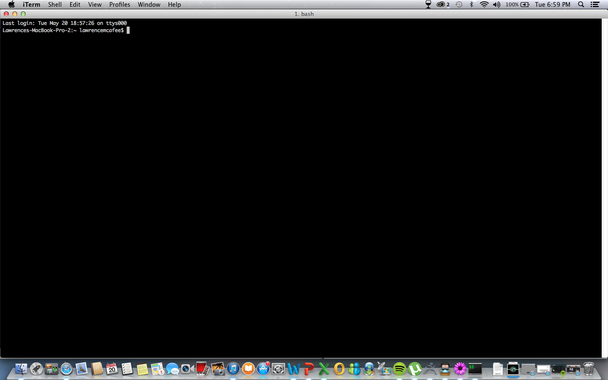

I am Lawrence and I am a senior finishing up my Bachelors in Telecommunications/Media & Information studies with a minor in Defense Studies & Leadership. After taking this course, I will commission into the United States Army as a 2nd Lieutenant and will go on to become an Infantry Officer! I do not have a ton of web development experience, but I do have a particular workspace I prefer!
After watching the videos for the course, I took from some of the ideas presented and incorporated them into my own when deveoping my own work space. I really enjoyed the simplicity and organization which is why I decided to go with what I did.
Below is an image of my desktop and on it is Safari, the browser I have selected to use, as well as the application TextMate. These are what I have used thus far and what I plan to continue using seeing how they haven't given me any problems yet. *Knocks on wood* Although it did take a little bit of getting use to, I was able to get the hang of the application and found it to be rather simple after a little practice.
I also took your advice and downloaded the application ITerm, which changed the look of my Terminal program so it looks a bit similar to the one you were using in the tutorials.
I also found this program to be a bit frustrating at first as well. But again, with a little practice I was able to figure things out! Below is a picture of what my ITerm looks like when I use it.
As far as my expectations for the course go, I am really looking forward to learning a lot. It seems like a very interesting and useful skill set to have in the long run and as you can see from my lack of detail and structure, I suck at it and could really use the practice lol. I am not the most creative person in the world, but I will do my best to make my projects as interesting as possible!